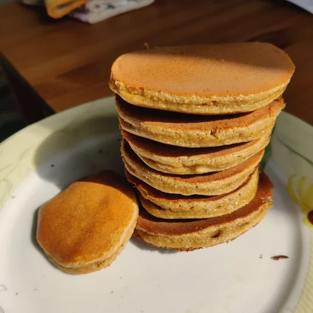

Oatmeal Pancakes

- ⏲️ Prep time: 10 min
- 🍳 Cook time: 15 min
- 🍽️ Servings: 8
Ingredients
- 2 eggs
- 40g sugar (3 tbsp)
- 20g honey (1 tbsp)
- 60ml milk (4 tbsp) (you can use water instead)
- 120g oat flour (1 cup)
- 1 tsp baking powder (or baking soda + some acid to activate it)
- Raspberry jam (optional)
Directions
- Mix eggs, sugar, honey and milk.
- In another bowl mix oat flour and baking powder.
- Combine two mixtures and let the batter rest for about 15 minutes.
- Preheat the pan for 5 minutes over low (~33%) heat, cook for about 1 - 1.5 minutes then flip when you see bubbles come out and cook for another 45s - 1 minute.
- Eat them with raspberry (or any other) jam.
Contribution
- wpnwbn